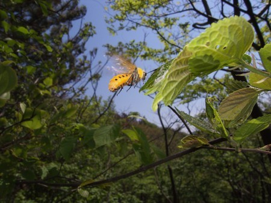

ほいっ♪
お疲ろってぃー*^ω^*
まひろでぇす(*^^*)
・・・
(・п・)
つっ,,,ついに
明日っっ!
名古屋にてっ,,,
全国握手会wwww★☆★☆★
そして、ライブ・・・(・∀・)
初めて披露する曲♪も
あったりしてぇ・・?♪
明日は天気も良さげだし
日焼けする覚悟って
とこかなっ>ω<)))笑?
でもまた、
皆さんの顔が赤くなったとこ
見れるぅ〜〃ω〃笑
・・・・
何の楽しみやねんっ>∀<!笑
明日のために、
エネルギーを
つけて行こうっ))・∀・!
ってことで、
今日の晩御飯は
メンバーたちと
ビーフカレー★☆★
食べようっ(*^^*)
ってなりました^ω^笑
あっ、そしてそして
ヂャーーーン♪

前の幼虫が脱皮をして
成虫になって、
お空に飛んでゆきましたぁ〜
(⌒‐⌒)
長生きします様に,,,っと♪
なぁ〜んてねっ＾ω＾〃笑
色々調べて
つい画像等を
保存しちゃって..(^-^)/
色々コメント読んでいたら
調べてくださった方が
たくさんいて(・∀・),,,
この虫さんはっ、
『ホシアシブトハバチ』
ってゆって、
関西に多く、絶滅に近い
わりかしモコモコして
ちゃんとした蜂さんの様ですっ*・ω・*
すごーーーぃっ♪
まひろも調べたんやけど
わかんなかったから
正体が知れた時は
ほんとスッキリしました(⌒‐⌒)
とゆうことまで、
明日、名古屋で待ってます〃＾ω＾〃
のし。